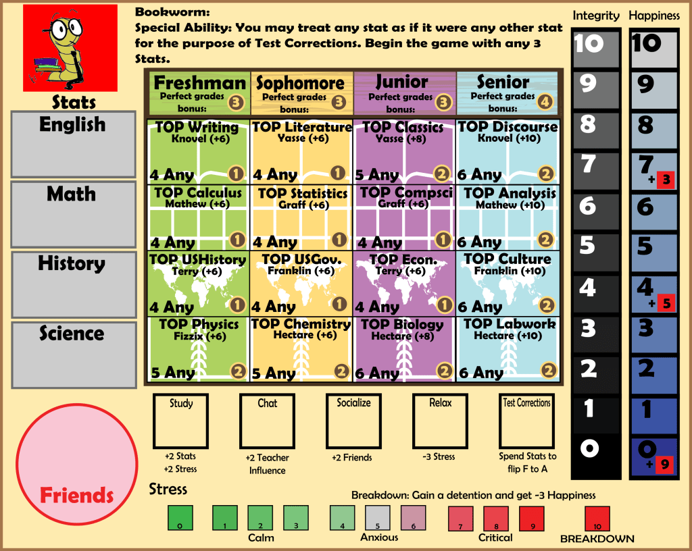
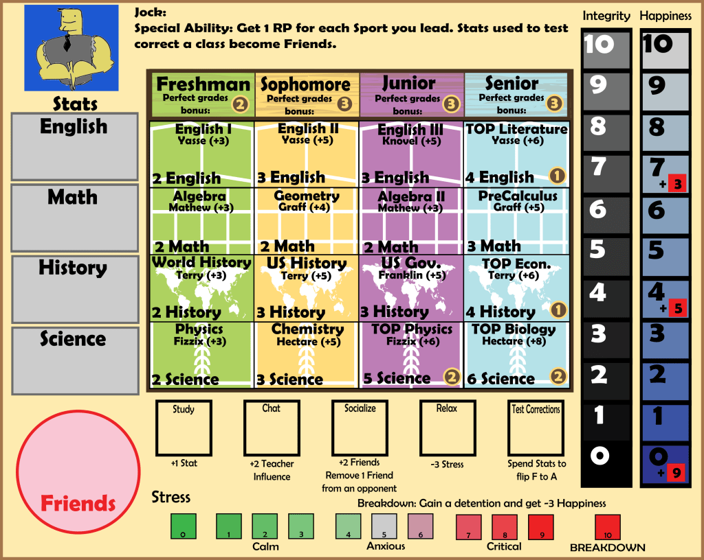
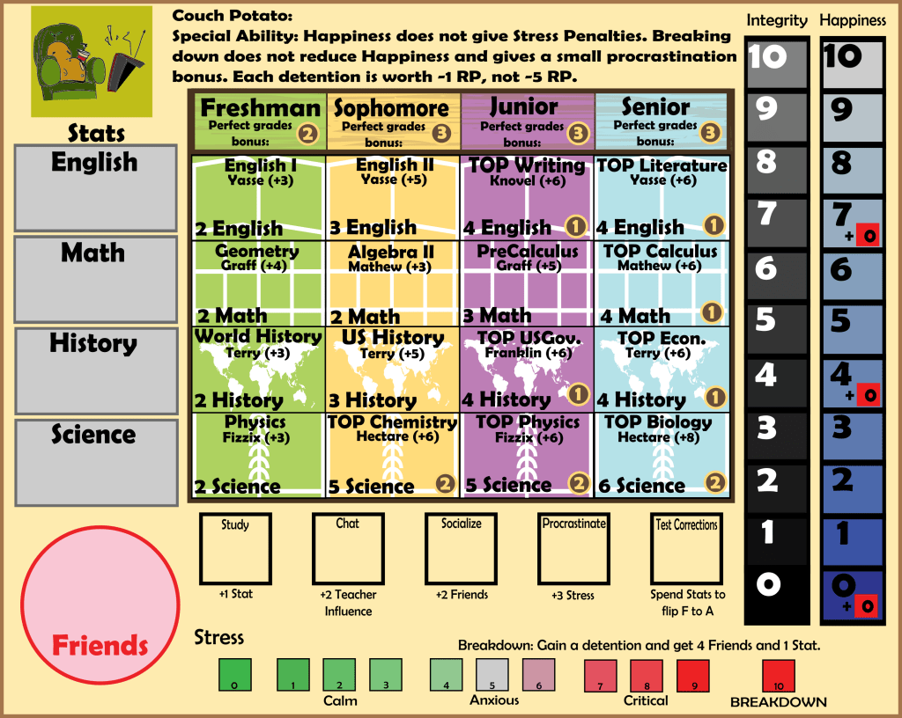
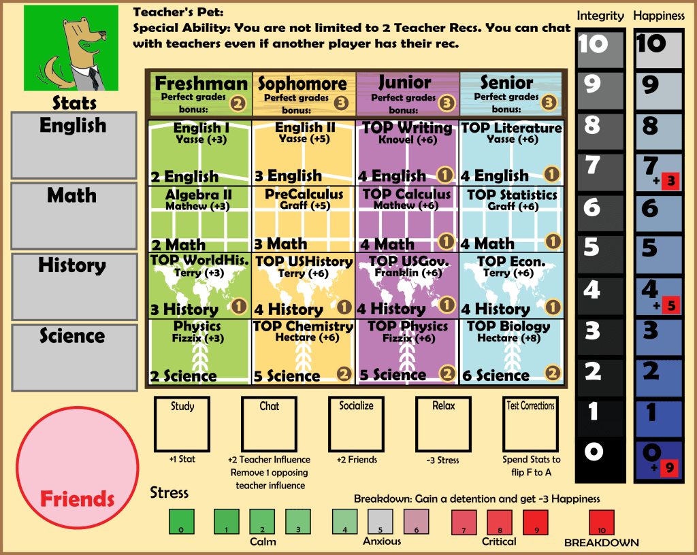
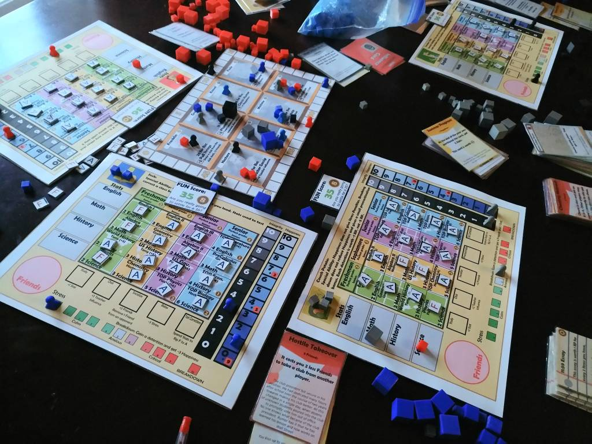
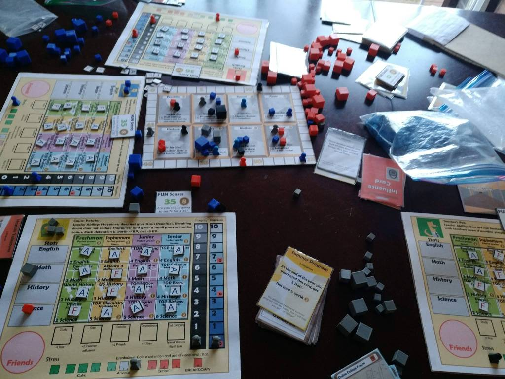

Hey everyone! Today I have something special to show you all. These character boards have been in the works for a while now, and I just got around to play testing them (with me playing all four characters against each-other).

This is the Bookworm. The Bookworm gets a schedule of only TOP classes, and starts off in very advanced classes to make the other players feel bad. In the early stages of this game being produced, my initial idea was to have every player be able to choose their schedule, whether that be highly advanced or all easy courses. This didn’t work very well as it just added unneeded complexity to the game. I kept the idea around though, and I hope that the fact that you can’t directly choose your classes makes for much smoother gameplay.
The Bookworm’s special ability allows any stat to be used when test correcting classes. In addition, the Study action is upgraded, allowing the Bookworm to gain 2 Stats and 2 Stress for 1 Action Point. Finally, they begin the game with 3 Stats. In my play test, the Bookworm picked up a large lead right out of the gate, and was able to test correct classes very easily. Because of this, I went for a pure grade strategy, which performed decently. However, Stress management became a huge issue later in the game and resulted in a couple breakdowns.

The Jock’s ability converts Stats that are used to Test Correct into Friends. For example, if the Jock Test Corrected Algebra, the Jock would lose 2 Math Stat and gain 2 Friends. The Jock gets a small bonus of 1 RP for leading Sport clubs, and also has an upgraded Socialize action that removes another player’s Friend every time it is used.
I found the Jock to be a very interesting play style. The classes are really crummy, but they give Friends for getting A’s which can help the Club grind. On the other hand, socializing is a good way to gain Friends as well as it can suppress the number of Friends other players have. In my playtest, I was able to give the Jock Stud Gov President, which resulted in me gaining an absurd number of clubs Freshman year. I actually ended up forgoing most of the Freshman year classes to get the clubs I wanted. However, the Jock actually ended up in last place due to everyone stealing his clubs. It really shows how clubs are a very good source of Resume Points- but they can always be stolen.
Couch Potato is an interesting one. Couch Potato’s special ability significantly buffs Breakdown, making it a good thing. Each time the Couch Potato breaks down, they get 4 Friends and 1 Stat. They also gain a Detention, but the Detention is only worth -1 RP. In addition, the Happiness track does not give stress penalties. The Couch Potato has nerfed classes, but not to the same extent as the Jock. The Couch Potato also has the ability “Procrastinate” instead of “Relax”, which gives 3 Stress.
The Couch Potato was my favorite by far. It was a ton of fun to turn crappy cards that gave me stress into really strong combos that caused myself to breakdown, and in turn give me stuff to spend. I was able to pick up Caffeine Pills, which was extraordinarily strong on Couch Potato. It made me realize that the two things making Caffeine Pills balanced was the high Integrity cost, and the risk of breakdown- which Couch Potato completely negates.
I actually am thinking of reworking the Happiness track on Couch Potato back to giving Stress, because the best part of Couch Potato is constantly breaking down. I am thinking that it could potentially use a slight nerf though, possibly by making detentions -2 RP instead of -1 RP.
The last character is the Teacher’s Pet (not to be confused with the influence card). The Teacher’s Pet can have unlimited Teacher Recs, and can chat with teachers that another player has a Rec with. The Teacher’s Pet also gets an upgraded Chat action, which is honestly extremely strong. It gives 2 Teacher Influence and allows the Teacher’s Pet to remove 1 of an opponent’s Teacher Influence. The Teacher’s Pet has standard classes.
I think I completely misplayed the Teacher’s Pet in the first year, because I was spending time competing for clubs and grades when I really should have been going headfirst for the crucial Teacher Recs. Teacher’s Pet can really dominate the Teacher game, and I was able to get 5 out of 8 Recs in my play test. I think that the Teacher’s Pet therefore has a lot of hidden potential, even though for the first two years of the game he felt very lackluster.
Anyway, I thought I’d share some of the point totals with you. I was not keeping track of the scores while I was playing, and I thought that the Jock was heavily in the lead and so the other characters were stealing the Jock’s clubs. I didn’t realize that the Couch Potato was so far ahead in the lead, or else their point total would have likely been decreased.
Couch Potato:Â Grades 30, Integrity 0, Detentions -3, Recs 11, FUN 8, Summer Programs 3, Studgovpres 3, Clubs 26, Essay 19. Total: 97
Teacher’s Pet: Grades 16, Integrity 3, Recs 37, FUN 10, Lie on the Resume 5, Clubs 0, Essays -3. Total: 68
Bookworm: Grades 53, Integrity 1, Detentions -5, FUN 10, Clubs 4, Essays 5. Total: 68
Jock: Grades 28, Integrity 3, Detentions -10, Recs 4, FUN 8, Clubs 11, Essays 11. Total: 55
 
Which of the four characters do you think is the strongest/you like the most? Let me know in the comments below, and make sure to subscribe if you enjoy this content!